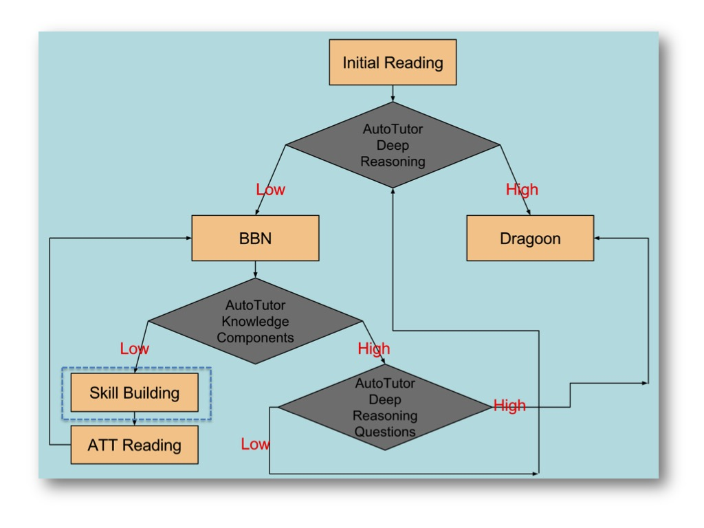

<html>
<head>

<script language=javascript src="util/apiwrapper.js"></script>
<script language=javascript src="util/jquery-1.3.2.min.js"></script>
<script language=javascript src="util/jquery-ui-1.7.2.custom.min.js"></script>
<script language=javascript src="util/utils.js"></script>
<script language=javascript>
var exitPageStatus = false;
   /**********************************************************************
   **  Function: loadPage()
   **  Description: This is called when a SCO is first loaded in the
   **               browser (onload()).  It finds the API if it was not
   **               already located and calls Initialize().  In
   **               the exitPageStatus global variable is set to false
   **               indicating that the SCO is not yet finished.
   **********************************************************************/
   function loadPage()
   {
     /* var result = doInitialize(); */
	 var TOPICInfo="Current Topic "+GetQueryVar("T","");
	   document.getElementById("TopicInfo").innerHTML = TOPICInfo;
   }
   
   
   
   /**********************************************************************
   **  Function: unloadPage()
   **  Description: This function is called in the case that the user
   **               does not finish the SCO "gracefully".  For example, 
   **               the user may click the "continue" button before
   **               submitting an answer to a question.  In this case,
   **               this function is called as part of the page unloading.
   **               This function ensures that Terminate() is called
   **               even if the user closes the SCO window or navigates
   **               away before finishing the SCO.
   **********************************************************************/
   function unloadPage()
   {
    /*
   	if (exitPageStatus != true)
   	{
   		doTerminate();
   	}
	*/
   
   	// NOTE: don't return anything that resembles a javascript
   	//		   string from this function or IE will take the
   	//		   liberty of displaying a confirm message box
   }
   function SetBackGround() {
	document.getElementById('Picture').innerHTML  = ""; 
}
function setText(){

document.getElementById('TextBody').innerHTML="Current Topic "+GetQueryVar("T","");
}
</script>
<title>Reading Page</title>
</head>

<body>
<table id="bodyTable">
<tr>
<td id ="TextBody">
</td>
</tr>
<tr>
<td id="Picture">
</td>
</tr>
</table>
<script text/javascript>
SetBackGround();
setText()
</script>
</body>
</html>